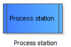
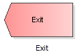

If the add edge function is enabled, you can add new edges by first clicking the source and then clicking the destination element of the new connection.
To add a connection edge between the process station element and the exit element first left click on the process station element on the drawing surface and then left click on the exit element on the drawing surface.
First click on:

Then click on:
